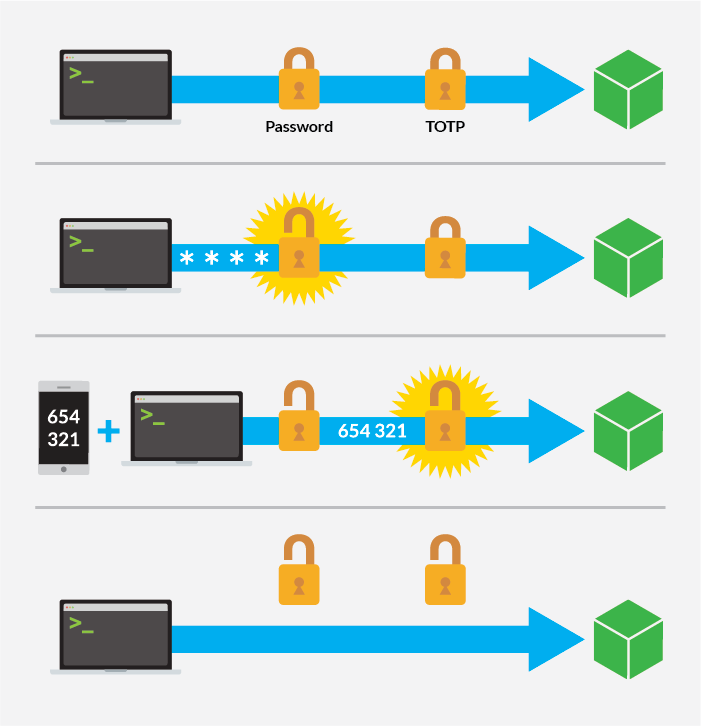
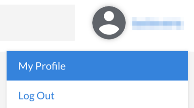
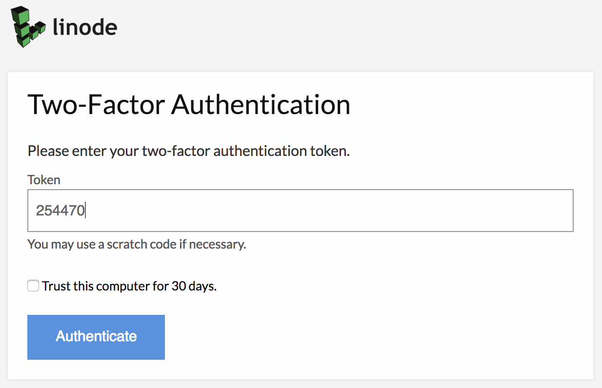

Linode Cloud Manager Security Controls
Updated by Linode Written by Linode
The Linode Cloud Manager is the gateway to all of your Linode products and services, and you should take steps to protect it from unauthorized access.
This guide documents several of the Linode Cloud Manager’s features that can help mitigate your risk. Whether you’re worried about malicious users gaining access to your username and password, or authorized users abusing their access privileges, the Linode Cloud Manager’s built-in security tools can help.
Start by enabling two-factor authentication to protect your account with a physical token, and then configure security event notifications for your Linode account. You’ll also learn how to control API access, configure user accounts, and force password expirations.
Two-Factor Authentication
Two-factor authentication increases the security of your Linode account by requiring two forms of authentication: something you have, and something you know. You’re already familiar with this concept if you’ve ever used a debit card at an ATM. The debit card is something you have, and the PIN access code is something you know. You need both the debit card and the PIN to access your bank account.

If you enable this optional feature in the Linode Cloud Manager, you’ll access your Linode account using your smartphone as a physical token in addition to your username and password. This additional layer of security reduces the risk that an unauthorized individual will gain access to your Linode account.
Select a Token Application
Before you enable two-factor authentication in the Cloud Manager, select a token application for your smartphone. This guide will use Authy as an example, but you can use any application that supports the Time-based One-Time Password (TOTP) algorithm. For example, you can use any of the following applications:
- Authy (iOS/Android/Chrome)
- Google Authenticator (iOS/Android/BlackBerry)
- Duo Mobile (iOS/Android)
Install one of these applications on your smartphone before continuing.
NoteAuthy stores your authentication tokens (hashed for security) on their servers. This makes it possible for them to support backing up and restoring tokens, as well as making it easy to switch devices. However, some users may not be comfortable storing sensitive information in the cloud; for these users, Google Authenticator is a better choice, as the authentication keys are only stored locally.
Enable Two-Factor Authentication
Enable two-factor authentication to start using it with your Linode account.
- Log in to the Linode Cloud Manager.
- Select the My Profile link by clicking on your username at the top of the page:

- Select the Password & Authentication tab.
- In the Two-Factor Authentication (TFA) section, toggle the Disabled switch so that it reads Enabled to enable Two-Factor Authentication.
A new form (depicted below) will appear. Write down the Secret Key and store it in a safe place:
On your smartphone, open Authy.
Tap Add Account.
Tap SCAN QR CODE.
Point your device’s camera at the barcode on your computer screen. The app creates a new token for your Cloud Manager login, automatically. It will be labeled LinodeManager:user. Change the account name if necessary, and press Done.
In the Token field of the Two-Factor Authentication form, enter the Linode Token, and click Save.
{kind=link}
That’s it! You’ve successfully enabled two-factor authentication and set up token generation on your smartphone.
Log in with Two-Factor Authentication
Now that you have set up two-factor authentication for your account, you’ll need to have your token available whenever you log in to your account. Here’s how to log in to the Linode Cloud Manager with two-factor authentication enabled:
Open the Linode Cloud Manager in your web browser.
On your smartphone, open Authy, and then select your LinodeManager:user account.
In your web browser, enter your username and password and click Log in. The webpage shown below appears.

Enter your token, and then click Authenticate. Checking the box below the authentication option will add your computer to the trusted computer list for 30 days, and generate a confirmation email to the address on file for your account.
You have successfully logged in to the Linode Cloud Manager using two-factor authentication.
Generate a New Key
The Linode Cloud Manager allows you to generate a new secret key for your two-factor authentication token device. This is a good way to start using a new smartphone as your two-factor token device. Here’s how to generate a new secret key:
- Log in to the Linode Cloud Manager.
- Select the My Profile link by clicking on your username at the top of the page:
- Select the Password & Authentication tab.
In the Two-Factor Authentication (TFA) section, click Reset two-factor authentication, as shown below.
{kind=link}
A new secret key and barcode will be generated for your account and displayed on the screen. Follow the instructions in the Enabling Two-Factor Authentication section to add the new key to your smartphone.
Disable Two-Factor Authentication
You can disable two-factor authentication for your Linode account at any time. Here’s how:
- Log in to the Linode Cloud Manager.
- Select the My Profile link by clicking on your username at the top of the page:
- Select the Password & Authentication tab.
- In the Two-Factor Authentication (TFA) section, toggle the Enabled switch to disable two-factor Authentication.
- A confirmation window appears asking if you want to disable two-factor authentication. Click Disable Two-Factor Authentication.
You have successfully disabled the two-factor authentication feature for your Linode Cloud Manager account.
Recovery Procedure
If you lose your token and get locked out of the Manager, email support@linode.com to regain access to your account.
Should you need us to disable your Two-Factor Authentication, the following information is required:
- An image of the front and back of the payment card currently associated with your account, which clearly shows the last 6 digits, expiration date, and cardholder name.
- An image of the front and back of a matching government-issued photo ID.
API Access
The Linode API is a programmatic interface for many of the features available in the Cloud Manager. It’s an indispensable tool for developers, but it’s also a potential attack vector. For this reason, the Linode Cloud Manager provides two security controls for your account’s API key. First, you can generate a new API key if you suspect that your existing key has been compromised. And if you’re not using the API key, you can remove access to it altogether.
For details on generating and removing API keys, please see the API Key article.
Next Steps
If you’ve completed this guide, you’ve proactively taken steps to protect your Linode account. There are a couple of other steps that some users should take to secure their Linode accounts. Take some time and work through the following action items outlined in our other guides.
Configure User Accounts
Organizations that have multiple individuals accessing the same Cloud Manager account should create separate user accounts for each individual. Once you’ve created the accounts, you can assign permissions to restrict access to certain areas of the control panel. This is useful for groups that need to grant all team members access to the Cloud Manager, or organizations that just want their billing department to have a separate account to receive invoices and billing information. For more information, see our guide on Accounts and Passwords.
Force Password Expirations
Some organizations have policies that require users to change their passwords every so often. The Linode Cloud Manager can be configured to force users to change their passwords every 1, 3, 6, or 12 months.
Join our Community
Find answers, ask questions, and help others.
The Linode Classic ManagerIf you're using the Linode Classic Manager instead of the new Cloud Manager, you can still view the Classic Manager version of this Linode Cloud Manager Security Controls guide.
This guide is published under a CC BY-ND 4.0 license.